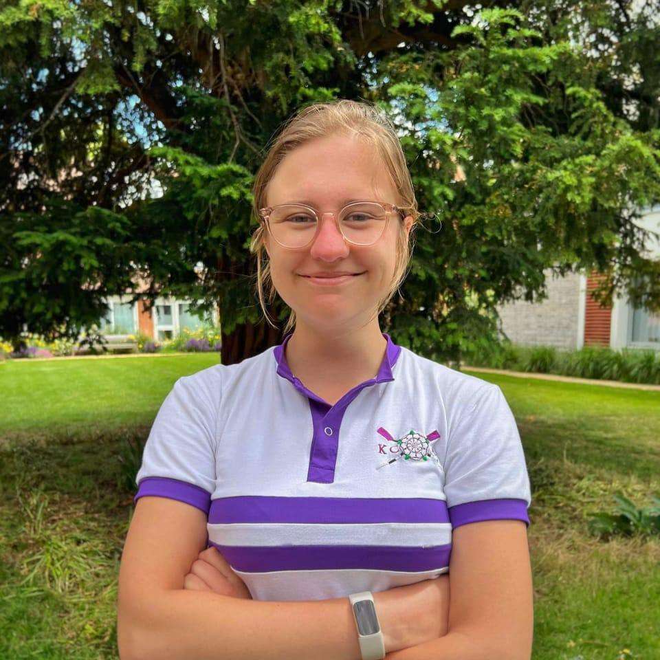

Amanda McHugh
Cambridge BA(Hons) (First Class) Linguistics and MPhil Theoretical and Applied Linguistics, specialising in machine learning approaches to emotion detection.
Cambridge BA(Hons) (First Class) Linguistics and MPhil Theoretical and Applied Linguistics, specialising in machine learning approaches to emotion detection.
To me, understanding and interpreting data is at the centre of navigating the world around us. Starting from a Linguistics background and focusing on machine learning for sincerity detection, I have expanded my skillset to explore all kinds of data using all kinds of methods. Check out my projects to see what I've been up to.
My research centres around exploring how machine learning can be used in emotion detection, specifically at new ways of modelling (in)sincerity in empathetic speech using machine learning. My MPhil research (2021-22) into this partly builds on my undergraduate dissertation on detection of empathetic speech, which was published in the Undergraduate Linguistics Associate of Britain Proceedings in 2021, viewable here.
At the moment, I'm working on publishing my MPhil thesis, as well as creating new data science portfolio projects, to help me as I am currently applying for data science jobs, aiming to start as soon as possible. If you would like to know more about my MPhil research, check out the "My Research" section.

In 2019, I had the privilege of being brought onto a project translating Wolfgang von Kempelen's Le mécanisme de la parole from French into English. The book, originally published in 1792, documents the first recorded effort to create a speech synthesiser, using a wooden box, some bellows, and some clever engineering from a man who had already caused a stir in European intellectual society. To find out more about the book and the man himself, have a look at my "Other Projects" section. Alternatively, if you've already been sold on reading the book, you can find it stocked at Blackwell's, and all other good book retailers.
I'm also doing some work on the Cwyzhy dialect of Abkhaz, a Turkish dialect of a minority language found usually in the Abkhazia region of Georgia. Sadly, the final speaker of Cwyzhy Abkhaz died only recently, so this book marks the last possible effort to compile and document what this dialect sounded like. The project has been spanning nearly 25 years, meaning that the work centres around compiling and comparing decades' worth of versions to create one single final version that fully documents this dialect.
I am currently additionally freelance editing a book chapter on Armenian Vowel Harmony, set to be published by Oxford University Press in 2023.
Outside of research, I currently work as a tutor, with both private clients through Witherow Brooke Tuition, Titanium Tutors and Freelancing, and with the National Tutoring Programme. The National Tutoring Programme provides one-to-one and small group tutoring to students in schools who would not otherwise be able to access tutoring services, meaning that I get to work with the students who need the most help with their studies. My primary focuses are GCSE-level French, English Language and English Literature, and Oxbridge applications. Please see my freelance work and tutoring section for more details about my tutoring services.
I'm also a keen musician and athlete; I completed by ARSM diploma in singing in 2018 and after having been a choral scholar at school, I joined King's College as a choral scholar for my undergraduate degree (2018-21), and sang with King's Voices Choir for the whole four years I was at Cambridge, winning the Harmer Prize for choral contributions to King's in 2020. I also played cello in the college orchestra for the music society's termly concerts. I also joined the King's College Boat Club in my first year (2018-19), and rowed throughout my undergraduate and MPhil. I was Vice-Captain in the 2019-20 season, and elected Captain for both the 2020-21 and 2021-22 seasons, winning 1st VIII Lent Colours in every year, and 1st VIII Mays Colours in 2021 and 2022. I've now made the switch to rugby, where I play in the Ladies' 1st XV at Tunbridge Wells RFC.